Every fold defines which observations are used to fit the model and whose predictions are scored. The analysis rows are used for fitting. The assessment rows are used for scoring. The omission set contains all the rows left out of fitting, including the assessment rows and any extra exclusions. In the figures, grey circles mark analysis rows, blue squares mark assessment rows and orange diamonds mark the extra exclusions. Each panel shows membership for the labelled fold or design.
The spatial and spatiotemporal examples use sf. The tree
example uses ape.
What nei tells mgcv
Make eight observations and specify two folds with
custom_folds(). Fold 1 scores the prediction for row 3.
Fold 2 scores rows 4 and 5. Rows 3 and 4 are left out of fitting in both
folds, and each is scored in a different fold.
observations <- tibble(time = 1:8)
folds <- custom_folds(observations,
assessment = list(3L, 4:5),
omission = list(2:4, 3:6)
)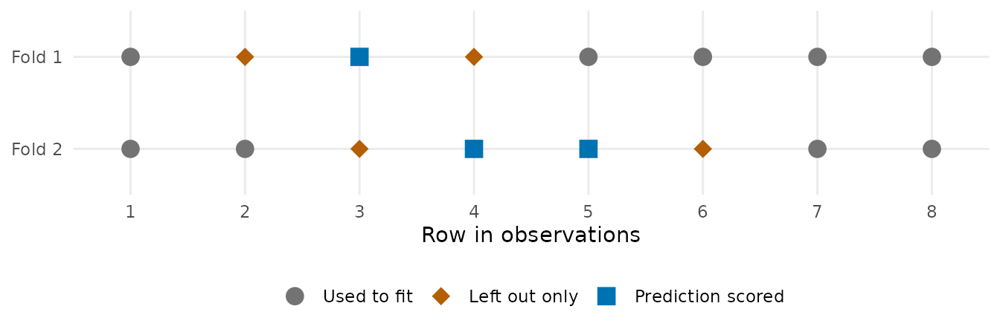
as_nei() packs the rows left out of fitting into
a and the rows scored into d, one fold after
another. In each vector the numbers inside the boxes
are row numbers in observations. The numbers on the
horizontal axis are positions in the packed vectors.
ma and md give the last position for each fold
in a and d, respectively. Each fold starts one
position after the previous endpoint, with the first fold starting at
position 1.
nei <- as_nei(folds)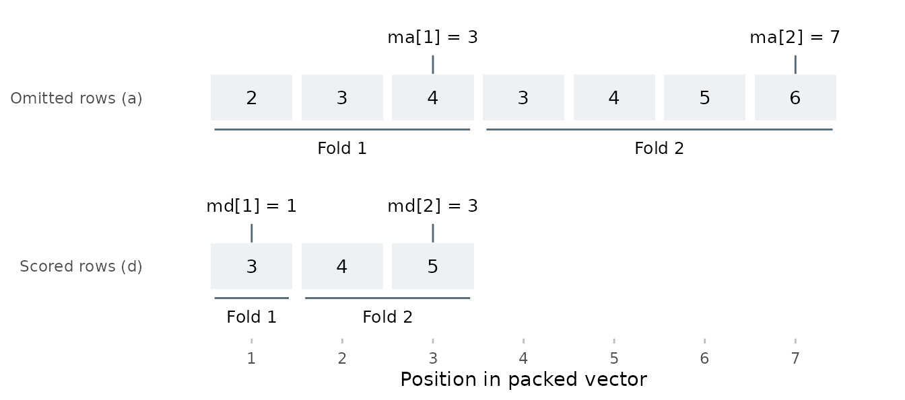
For a given set of smoothing parameters, the NCV criterion uses
predictions from the fit with each fold’s a rows left out.
It adds the loss for the corresponding d rows, here row 3
from the first fold and rows 4 and 5 from the second. mgcv calculates
the leave-out predictions through an approximation to refitting, chooses
the smoothing parameters by minimising the criterion, and uses all the
data for the final model. See Assessment, omission
and prediction targets for a worked fit.
Use custom_folds() to supply membership directly or
from_rset() to import existing rsample splits.
In an imported split, rows outside both the analysis and assessment sets
are the extra omissions.
Leave-one-out and random V-fold
Both designs score every observation once across the full set of
folds. loo_folds() holds out one observation at a time.
vfold_folds() assigns observations to V folds and holds out
one fold at a time. In this example the random design has three folds,
each with four observations.
times <- tibble(day = 1:12, date = as.Date("2024-01-01") + day - 1L)
loo <- loo_folds(times)
random <- vfold_folds(times, v = 3, seed = 2026)
plot_fold_rows <- function(points, x_label) {
ggplot(points, aes(x = observation, y = panel)) +
geom_line(aes(group = panel), colour = "grey85", linewidth = 0.4) +
geom_point(aes(colour = role, shape = role), size = 3) +
fold_scales() +
scale_x_continuous(breaks = sort(unique(points$observation))) +
scale_y_discrete(limits = rev, expand = expansion(add = c(0.35, 0.72))) +
labs(x = x_label, y = NULL) +
theme(panel.grid = element_blank())
}
basic_points <- dplyr::bind_rows(
fold_points(loo, times, 5L, "Leave-one-out"),
fold_points(random, times, 1L, "Random three-fold")
)
plot_fold_rows(basic_points, "Observation")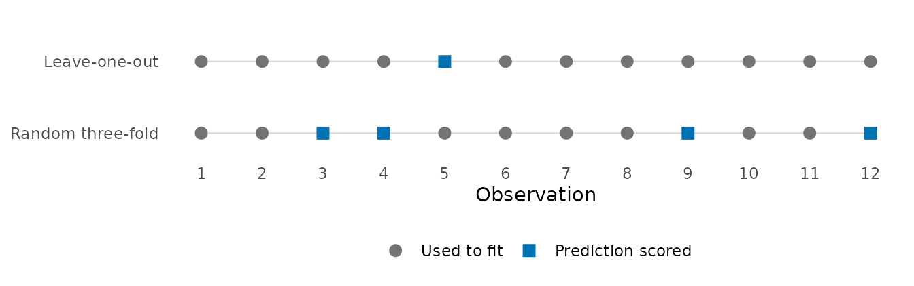
Temporal neighbourhoods and blocks
Both examples leave out days 4 to 6 and use observations on either side for fitting. The neighbourhood has a one-day radius and scores only the focal day, day 5. The three-day temporal block scores all three held-out days.
time_neighbours <- neighbourhoods(times,
index = date, temporal = temporal_window(time_span(1, "days"))
)
time_blocks <- temporal_folds(times, index = date, size = time_span(3, "days"))
time_points <- dplyr::bind_rows(
fold_points(time_neighbours, times, 5L, "Focal neighbourhood"),
fold_points(time_blocks, times, 2L, "Contiguous block")
)
plot_fold_rows(time_points, "Day")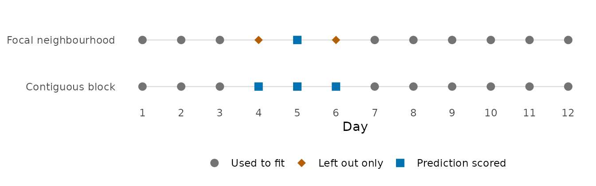
Expanding and sliding forecasts
At the origin on day 6, the expanding window uses all observations through that day, and the sliding window uses the most recent three days. Both skip day 7 as a gap and score forecasts for days 8 and 9, the two-day horizon. Days 10 to 12 are beyond that horizon and unavailable for fitting at this origin. Moving the origin forward also moves the gap and horizon.
origins <- times$date[c(6, 8)]
gap <- time_span(1, "days")
horizon <- time_span(2, "days")
expanding <- forecast_folds(times,
index = date, origins = origins, gap = gap, horizon = horizon
)
sliding <- forecast_folds(times,
index = date, origins = origins, gap = gap, horizon = horizon,
window = "sliding", lookback = time_span(3, "days")
)
forecast_points <- dplyr::bind_rows(
fold_points(expanding, times, 1L, "Expanding window"),
fold_points(sliding, times, 1L, "Sliding window")
)
plot_fold_rows(forecast_points, "Day") +
annotate("segment", x = 6, xend = 6, y = 2.13, yend = 2.36,
colour = "grey50", linewidth = 0.4
) +
annotate("text", x = c(6, 7, 8.5, 11), y = 2.53,
label = c("Origin", "Gap", "Horizon", "Beyond horizon"), size = 3.1
)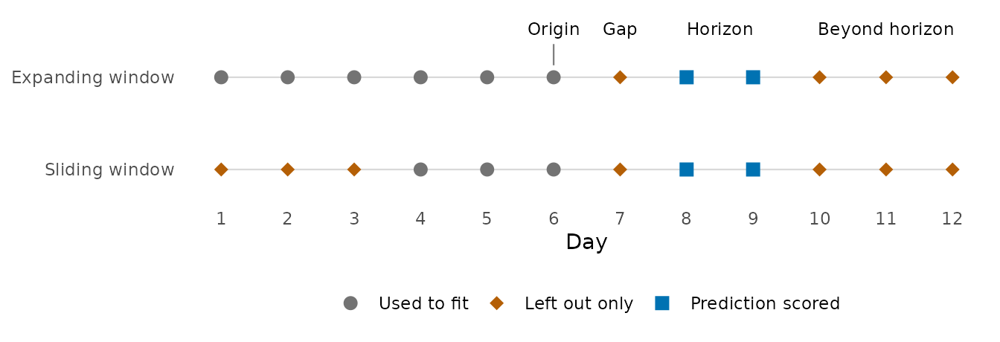
Spatial holdouts and buffers
A spatial block fold scores all observations in a held-out region. Adding a buffer leaves the assessment rows unchanged and removes nearby observations from fitting. Here the circles mark the 120 m windows around assessment sites. A focal spatial neighbourhood instead scores one observation per fold.
sites <- tibble(
site = LETTERS[1:12],
easting = c(130, 250, 360, 430, 550, 720, 110, 250, 370, 450, 590, 730),
northing = c(145, 340, 360, 350, 190, 80, 580, 710, 450, 460, 690, 550)
) |>
sf::st_as_sf(coords = c("easting", "northing"), crs = 32631, remove = FALSE)
block_width <- 400
radius <- 120
site_window <- spatial_window(units::set_units(radius, "m"))
spatial_blocks <- spatial_folds(sites,
size = units::set_units(block_width, "m"), origin = c(0, 0)
)
spatial_buffer <- buffer_folds(spatial_blocks, sites, spatial = site_window)
spatial_focal <- neighbourhoods(sites, spatial = site_window)
spatial_panels <- c("Spatial block", "Buffered spatial block", "Focal spatial window")
spatial_points <- dplyr::bind_rows(
fold_points(spatial_blocks, sites, 1L, spatial_panels[1]),
fold_points(spatial_buffer, sites, 1L, spatial_panels[2]),
fold_points(spatial_focal, sites, 3L, spatial_panels[3])
)
spatial_points$panel <- factor(spatial_points$panel, levels = spatial_panels)
cells <- expand.grid(
panel = factor(spatial_panels[1:2], levels = spatial_panels),
xmin = c(0, block_width), ymin = c(0, block_width)
)
circle_centres <- spatial_points[
spatial_points$panel %in% spatial_panels[2:3] &
spatial_points$role == "assessment",
]
theta <- seq(0, 2 * pi, length.out = 81)
circles <- dplyr::bind_rows(lapply(seq_len(nrow(circle_centres)), function(i) {
centre <- circle_centres[i, ]
tibble(
panel = centre$panel, site = centre$site,
easting = centre$easting + radius * cos(theta),
northing = centre$northing + radius * sin(theta)
)
}))
ggplot(spatial_points, aes(easting, northing)) +
geom_rect(
data = cells,
aes(xmin = xmin, xmax = xmin + block_width,
ymin = ymin, ymax = ymin + block_width),
inherit.aes = FALSE, fill = NA, colour = "#95A1AC", linewidth = 0.45
) +
geom_path(
data = circles, aes(group = site),
colour = "#9A722F", linetype = "dashed", linewidth = 0.5
) +
geom_point(aes(colour = role, shape = role), size = 3) +
facet_wrap(vars(panel), nrow = 1) +
scale_x_continuous(breaks = c(0, 400, 800)) +
scale_y_continuous(breaks = c(0, 400, 800)) +
coord_equal(xlim = c(0, 800), ylim = c(0, 800), expand = FALSE) +
labs(x = "Easting (m)", y = "Northing (m)") +
fold_scales() +
theme(panel.grid = element_blank(), panel.spacing.x = grid::unit(1.4, "lines"))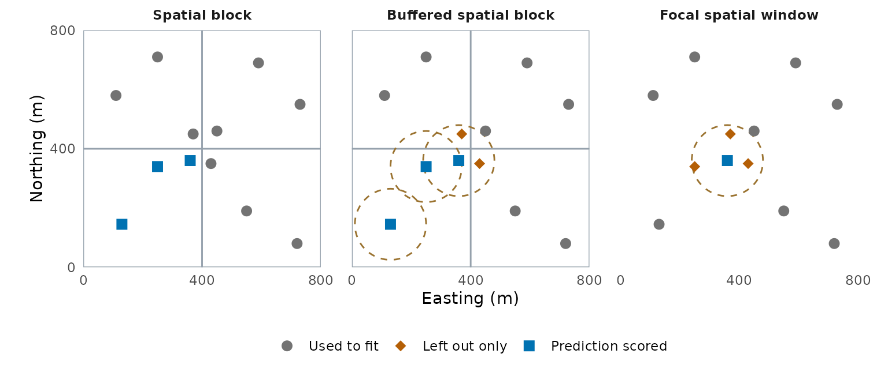
Spatiotemporal neighbourhoods
Every point represents one observation at a station on a day. Both folds score station B on day 5. The spatial window reaches 140 m either side of B and the time window reaches one day either side of the focal date. With intersection, observations must be inside both windows to be omitted. With union, being inside either window is enough.
stations <- tibble(
station = LETTERS[1:5],
easting = c(75, 200, 350, 520, 685),
northing = 100
)
station_days <- merge(stations, data.frame(day = 1:9))
# Times are elapsed seconds. The observations fall at the middle of each day.
station_days$time <- 86400 * (station_days$day - 0.5)
station_days <- sf::st_as_sf(station_days,
coords = c("easting", "northing"), crs = 32631, remove = FALSE
)
focal_row <- which(station_days$station == "B" & station_days$day == 5L)
station_radius <- 140
station_window <- spatial_window(units::set_units(station_radius, "m"))
day_window <- temporal_window(time_span(1, "days"))
near_in_both <- neighbourhoods(station_days,
spatial = station_window, temporal = day_window,
key = station, index = time, combine = "intersection"
)
near_in_either <- neighbourhoods(station_days,
spatial = station_window, temporal = day_window,
key = station, index = time, combine = "union"
)
window_panels <- c("Intersection", "Union")
window_points <- dplyr::bind_rows(
fold_points(near_in_both, station_days, focal_row, window_panels[1]),
fold_points(near_in_either, station_days, focal_row, window_panels[2])
)
window_points$panel <- factor(window_points$panel, levels = window_panels)
centre <- station_days[focal_row, ]
window_extent <- tibble(
panel = factor(c("Intersection", "Union", "Union"), levels = window_panels),
xmin = c(centre$day - 1, centre$day - 1, 0.5),
xmax = c(centre$day + 1, centre$day + 1, 9.5),
ymin = c(centre$easting - station_radius, 0, centre$easting - station_radius),
ymax = c(centre$easting + station_radius, 800, centre$easting + station_radius)
)
ggplot(window_points, aes(day, easting)) +
geom_rect(
data = window_extent,
aes(xmin = xmin, xmax = xmax, ymin = ymin, ymax = ymax),
inherit.aes = FALSE, fill = "#E4ECF1"
) +
geom_point(aes(colour = role, shape = role), size = 2.8) +
facet_wrap(vars(panel), nrow = 1) +
scale_x_continuous(breaks = 1:9, limits = c(0.5, 9.5), expand = c(0, 0)) +
scale_y_continuous(
breaks = stations$easting, labels = stations$station,
limits = c(0, 800), expand = c(0, 0)
) +
labs(x = "Day", y = "Station (ordered by easting)") +
fold_scales()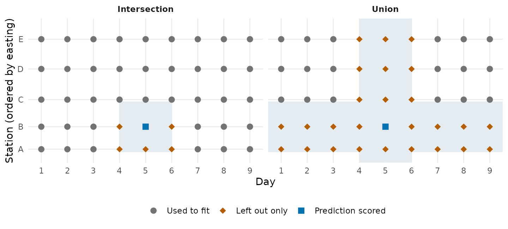
Spatiotemporal blocks
For the same stations and dates, use 400 m spatial blocks and three-day time blocks. The crossed design holds out one spatial block during one time block. The space-only design holds out a spatial block across all dates. The time-only design holds out a time block across all stations. Each panel shows the fold that includes station B on day 5.
block_modes <- c(
crossed = "Crossed space and time",
space = "Space only",
time = "Time only"
)
block_points <- dplyr::bind_rows(lapply(names(block_modes), function(mode) {
design <- spatiotemporal_folds(station_days,
spatial_size = units::set_units(block_width, "m"),
temporal_size = time_span(3, "days"),
spatial_origin = c(0, 0), temporal_origin = 0,
mode = mode, key = station, index = time
)
has_focal_row <- vapply(assessment_indices(design), function(rows) {
focal_row %in% rows
}, logical(1))
fold_points(design, station_days, which(has_focal_row), block_modes[[mode]])
}))
block_points$panel <- factor(block_points$panel, levels = block_modes)
space_boundaries <- tibble(
panel = factor(block_modes[c("crossed", "space")], levels = block_modes),
boundary = block_width
)
time_boundaries <- expand.grid(
panel = factor(block_modes[c("crossed", "time")], levels = block_modes),
boundary = c(3.5, 6.5)
)
ggplot(block_points, aes(day, easting)) +
geom_hline(
data = space_boundaries, aes(yintercept = boundary),
colour = "#95A1AC", linewidth = 0.5
) +
geom_vline(
data = time_boundaries, aes(xintercept = boundary),
colour = "#95A1AC", linewidth = 0.5
) +
geom_point(aes(colour = role, shape = role), size = 2.7) +
facet_wrap(vars(panel), nrow = 1) +
scale_x_continuous(breaks = c(1, 3, 5, 7, 9), limits = c(0.5, 9.5)) +
scale_y_continuous(
breaks = stations$easting, labels = stations$station, limits = c(0, 800)
) +
labs(x = "Day", y = "Station (ordered by easting)") +
fold_scales()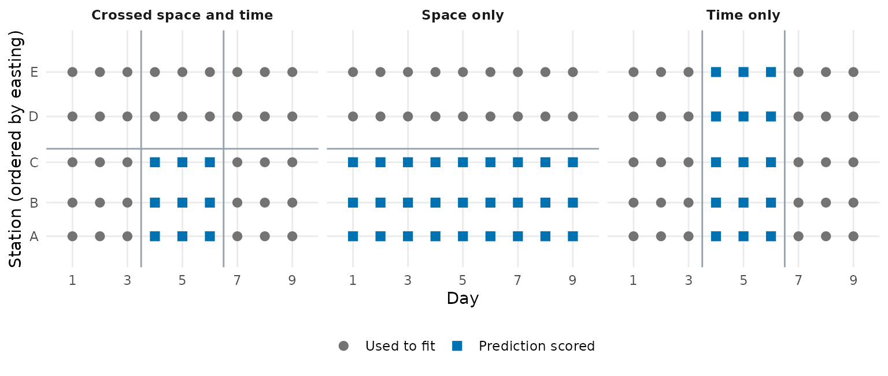
Observational groups
Use group_folds() to score every observation from one
site together. For nested groups, select all the columns that identify a
group. Supply v to allocate whole groups to a smaller
number of folds.
visits <- tibble(
site = rep(c("A", "B", "C"), each = 4),
visit = rep(1:4, times = 3)
)
site_folds <- group_folds(visits, group = site)
fold_points(site_folds, visits, 1:2, c("Hold out site A", "Hold out site B")) |>
ggplot(aes(visit, site)) +
geom_line(aes(group = site), colour = "grey82") +
geom_point(aes(colour = role, shape = role), size = 3) +
facet_wrap(vars(panel)) +
scale_x_continuous(breaks = 1:4) +
scale_y_discrete(limits = c("C", "B", "A")) +
labs(x = "Visit", y = "Site") +
fold_scales()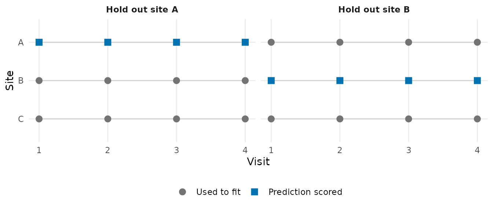
Environmental clusters
environmental_folds() can cluster observations by
numeric predictors using k-means. Each cluster becomes a holdout. Use
strata to hold out existing environmental categories such
as habitat types.
climate <- tibble(
temperature = c(10, 11, 12, 10.5, 15, 16, 17, 16.5, 22, 23, 25, 24),
moisture = c(72, 77, 70, 65, 35, 43, 38, 31, 49, 57, 53, 45)
)
climate_folds <- environmental_folds(
climate, predictors = c(temperature, moisture), v = 3, seed = 22
)
climate_groups <- assessment_indices(climate_folds)
cluster_temperature <- vapply(climate_groups, function(rows) {
mean(climate$temperature[rows])
}, numeric(1))
selected_clusters <- c(which.min(cluster_temperature), which.max(cluster_temperature))
outlines <- do.call(rbind, lapply(seq_along(climate_groups), function(i) {
points <- climate[climate_groups[[i]], ]
hull <- grDevices::chull(points$temperature, points$moisture)
transform(points[hull, ], cluster = i)
}))
fold_points(climate_folds, climate, selected_clusters, c("Hold out cool, wet sites", "Hold out warm sites")) |>
ggplot(aes(temperature, moisture)) +
geom_polygon(
aes(group = cluster), data = outlines, fill = NA, colour = "grey82"
) +
geom_point(aes(colour = role, shape = role), size = 3) +
facet_wrap(vars(panel)) +
labs(x = "Temperature (°C)", y = "Soil moisture (%)") +
fold_scales()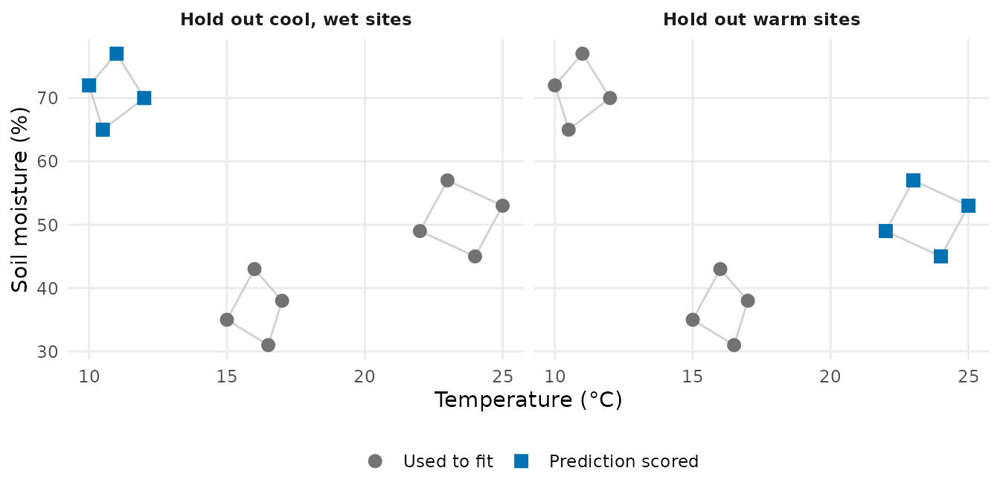
Phylogenetic clades and neighbourhoods
A clade fold scores all observations of its held-out taxa. A focal neighbourhood scores one observation and excludes other observations within the specified branch-length distance. Here oak and beech are two units apart. Both are omitted from the fold fit in each panel.
tree <- ape::read.tree(text = "((oak:1,beech:1):2,(pine:1,fir:1):2);")
taxa <- tibble(taxon = tree$tip.label, tip_y = 4:1)
clade_folds <- phylogenetic_folds(
taxa, tree, taxon, clades = list(c("oak", "beech"), c("pine", "fir"))
)
near_taxon <- neighbourhoods(
taxa, phylogenetic = phylogenetic_window(tree, taxon, radius = 2)
)
tip_panels <- c("Clade holdout", "Focal oak neighbourhood")
tips <- rbind(
fold_points(clade_folds, taxa, 1, tip_panels[1]),
fold_points(near_taxon, taxa, 1, tip_panels[2])
)
tips$panel <- factor(tips$panel, levels = tip_panels)
depth <- ape::node.depth.edgelength(tree)
node_y <- c(taxa$tip_y, 2.5, 3.5, 1.5)
branches <- tibble(
parent = tree$edge[, 1],
child = tree$edge[, 2],
x = depth[parent], xend = depth[child],
y = node_y[child], parent_y = node_y[parent]
)
tips$depth <- depth[tips$observation]
ggplot(tips, aes(depth, tip_y)) +
geom_segment(
aes(x = x, xend = xend, y = y, yend = y),
data = branches, inherit.aes = FALSE, colour = "grey55"
) +
geom_segment(
aes(x = x, xend = x, y = parent_y, yend = y),
data = branches, inherit.aes = FALSE, colour = "grey55"
) +
geom_point(aes(colour = role, shape = role), size = 3) +
geom_text(aes(label = taxon), nudge_x = 0.14, hjust = 0, size = 3.5) +
facet_wrap(vars(panel)) +
scale_x_continuous(breaks = 0:3, expand = expansion(add = c(0.1, 0.8))) +
labs(x = "Branch length from root", y = NULL) +
fold_scales() +
theme(
panel.grid = element_blank(),
axis.text.y = element_blank(),
axis.ticks.y = element_blank()
)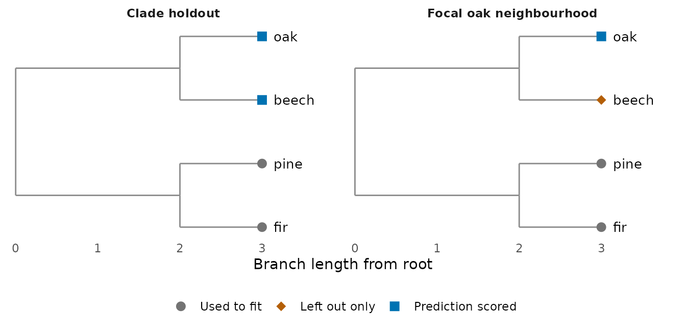
phylogenetic_folds() can also hold out groups formed by
complete-linkage clustering of distances along the tree. Use
v for a number of clusters or height for the
maximum allowed distance between two taxa in a cluster.